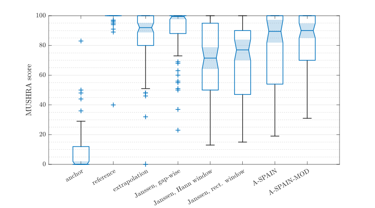

The listening test featured exactly the audio examples shown on the corresponing page.
The boxplots demonstrate the distribution of the scores given by the assessors, plotted using the boxchart function in Matlab.
This plot corresponds to Figure 4 in the paper, only the style is slightly different.
